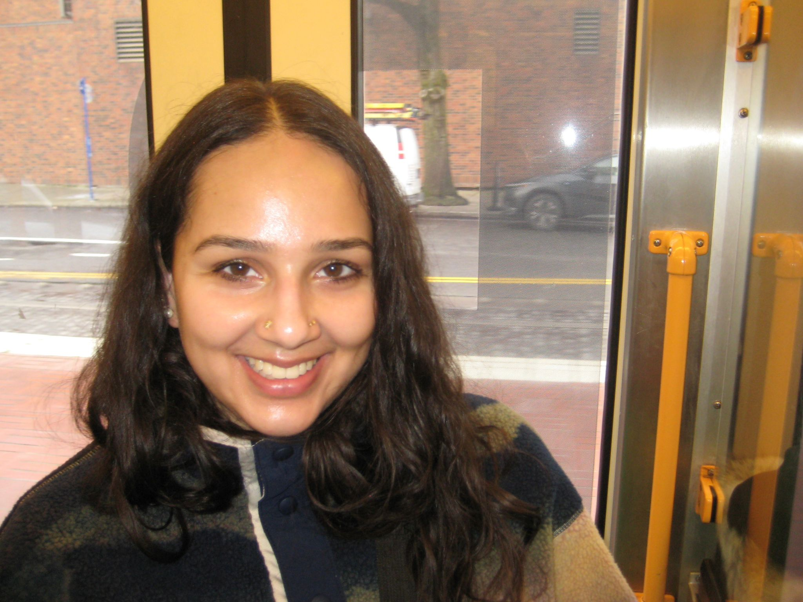

Ph.D. Candidate in Government at Harvard University
I have taught graduate and undergraduate courses in quantitative methods and comparative politics. In July 2025, I received a Teaching Certificate from the Derek Bok Center for Teaching and Learning. In every semester I was eligible, I earned a Certificate of Distinction in Teaching, and my mean overall evaluation is 4.8/5. As a teaching fellow, I have experience with the following courses.
I have advised six undergraduate theses. In May 2025, I was awarded the Harvard Government Department's Cheryl B. Welch Thesis Adviser Award. I also serve as a departmental concentration advisor, assisting approximately 40 students per year with course selection and other aspects of their academic lives.